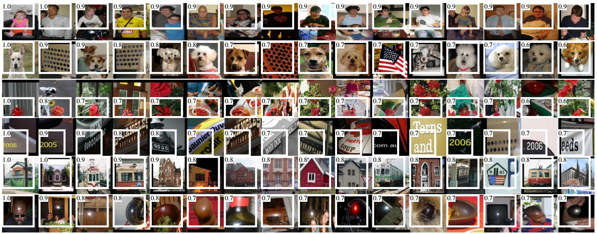

Understanding and visualizing Convolutional Neural Networks
目录
- Visualizing what ConvNets learn
- Visualizing the activations and first-layer weights
- Retrieving images that maximally activate a neuron
- Embedding the codes with t-SNE
- Occluding parts of the image
- Visualizing the data gradient and friends
- Reconstructiong original images based on CNN Codes
- How much spatial information is preserved?
- Plotting performances as a function of image attributes
- Fooling ConvNets
- Comparing ConvNets to Human labelers
由于 cs321n 的对应部分没有完成，所以本部分只是对应的翻译。
Visualizing what ConvNets learn
由于神经网络和卷积神经网络常常被诟病可解释性较差，本部门主要讨论理解和可视化卷 积神经网络的几种方法。
Visualizing the activations and first-layer weights
Layer Activations
最为常见和直接的方法是对神经网络的激活值进行可视化。对于 RELU 网络，激活值常常 看起来是点滴状和稠密状，但是随着训练过程，激活值变得越来越稀疏和局部化。这种 可视化方法有一个缺点，对于不同的输入，激活值可能都是 0，叫做卷积核假死，主要 原因可能是因为学习率设置较高。

左图：第一层卷积层激活值典型形状。右图为 AlexNet 输入为猫的时候第五层卷积层的 激活值。可以看到激活值大部分稀疏，本且局部化。
Conv/FC Filters
第二种常见的方式是对权重进行可视化。由于第一层卷积层直接对原始像素进行卷积， 空间大小和输入的图像大小一直，所以第一层的权重值可解释性较高。但是较深的卷积 核权重值也可以可视化。由于训练好的卷积神经网络的卷积核权重值看起来具有一定的 模式，并且较为平滑，没有噪音。没有训练好的卷积神经网络，会出现很多的噪声卷积 核，也有可能是因为正则系数较小，造成了过拟合。


左图：第一层卷积核的权值典型形状。右图：AlexNet 的第二层卷积核典型形状。可以 看到第一层的权值较为干净和平滑，表示网络已经训练较好。可以看到卷积核有灰色的 和彩色的，主要是因为 AlexNet 将处理流分成了两部分，这种结构造成了一个流中主要学 习的是高频的文本信息，另外一种彩色的是低频彩色信息。第二层卷积核权值并没有第 一层卷积核这么具有可解释性，但是也可以看到卷积核也很平滑，形状较好。
Retrieving images that maximally activate a neuron
另外一种可视化方法是，将大量的图像喂到卷积神经网络中，然后记录哪种图像可以最大 激活一些神经元。这样可以知道神经元具体是在自己的感受野中找寻什么样的图像。Rich feature hierarchies for accurate object detection and semantic segmentation论 文中使用了该种可视化方法。

AlexNet 的第五层采样层中的最大激活值对应的图像。图上显示了激活值和对应的感受野。 可以看到有一些神经元是检测上半身，文字，或者斑点。
该方法的一个问题是，RELU 神经元自身并没有什么语义含义。一种比较好的想法是将 RELU 神经元看作是图像局部空间的偏置向量。具体可以参考论文Intriguing properties of neural networks。
Embedding the codes with t-SNE
卷积神经网络可以看作是将输入图片渐渐映射到一个线性可分的空间。可以通过更为激进 的方法，将图像映射到一个二维的隐特征空间中，并且在低维空间的表达不同图像的距离 和在高维空间表达的距离近似。有很多嵌入方法(embedding)都是以在低维空间的向量 距离和高维空间的距离相似为条件。t-SNE是这些方法中较为出名的。
为了对图像进行嵌入表达，可以先将图像送入卷积神经网络获取卷积编码(AlexNet 在输 出层之前获得 4096 维向量)。可以将卷积编码送入 t-SNE 得到二维向量。对应的图 像以网格可视化如下：

t-SNE 对 CNN 编码进行的嵌入表达。更近的图像在卷积表达中也更近。可以看到相似的 图像并不仅仅是像素级相似或者颜色相似，而是图像中的分类相似。更详细的信息可以参 考：t-SNE visualization of CNN codes
Occluding parts of the image
假设一个图像分类为狗，那么如果断定分类器确实是依据图像中的狗的像素分类的，而不 是背景或者其他杂乱像素分类的呢？一个判断的方法是对图片中的局部像素进行置 0 操作， 然后将局部像素置 0 后的对应分类得分作为得分绘制二维热点图，就可以看到得分较低的 部门对分类器影响最大。该方法在论文Visualizing and Understanding Convolutional Networkds中使用。
上半部的三图为原始图像。置 0 区域以灰色区域显示，然后将置 0 区域在图像上移动，并 且记录正确分类的得分，然后可视化结果（下三图）。最下边左图，可以看到当置 0 区域 封盖住狗的脸的时候，概率最低，这表示分类器确实是以狗的像素来作主要判断依据的。 其他区域没有影响。